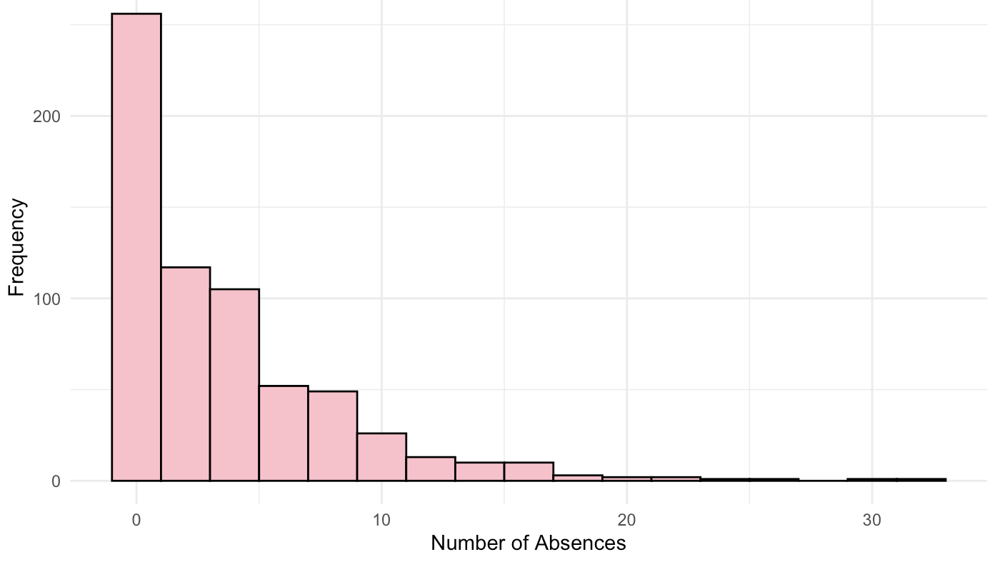
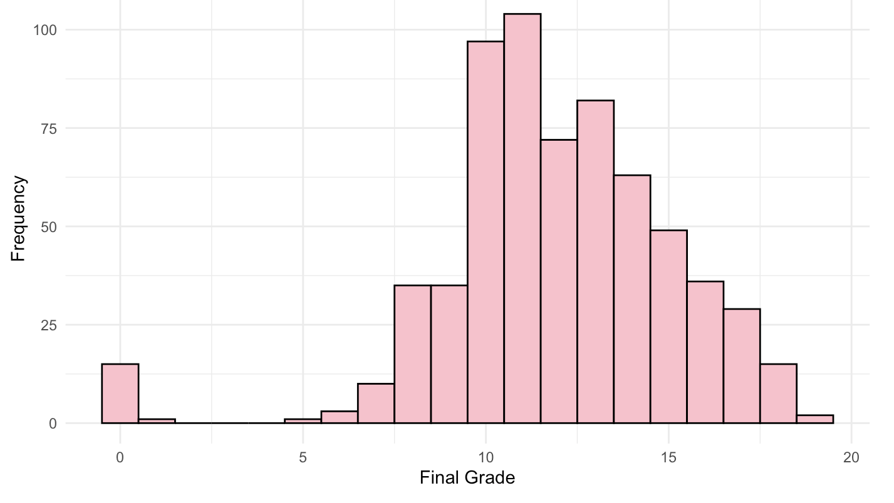
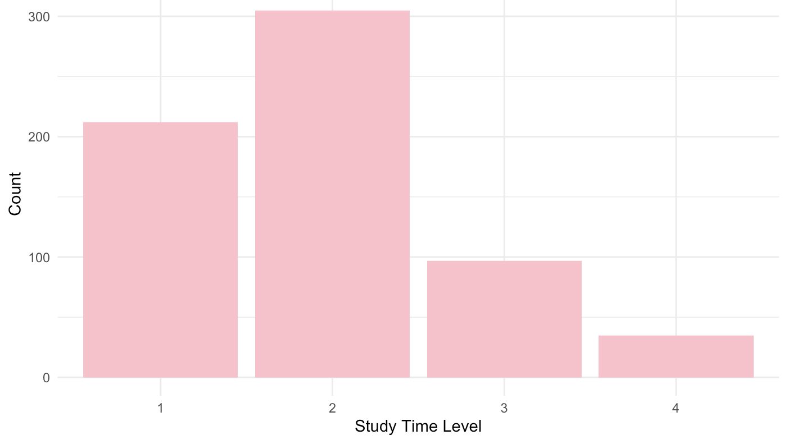
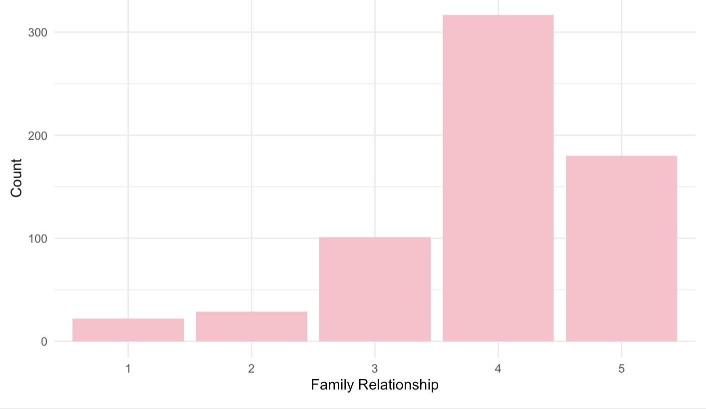
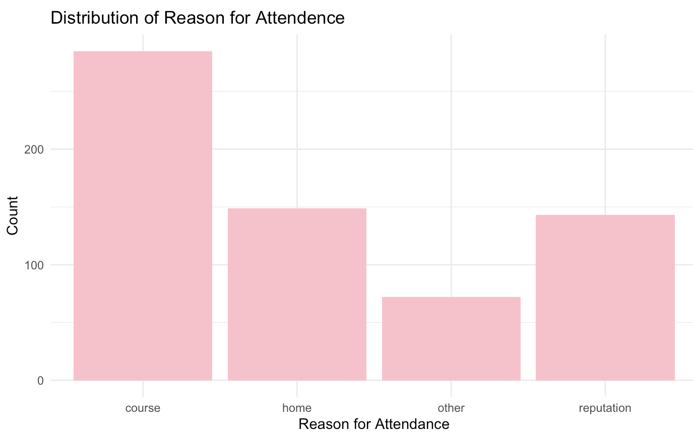
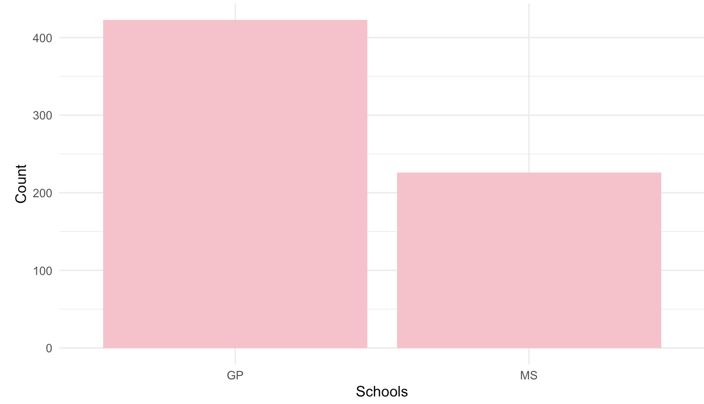
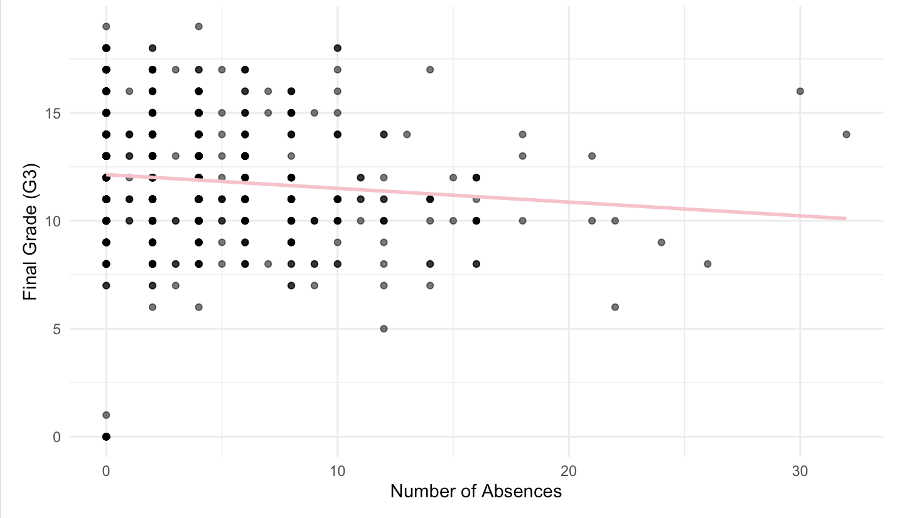
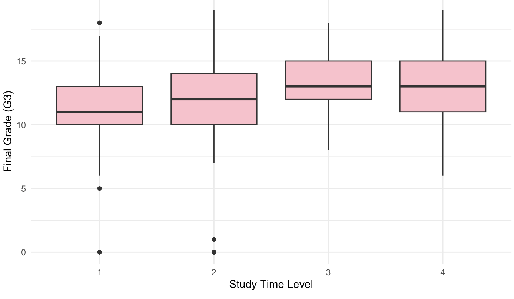
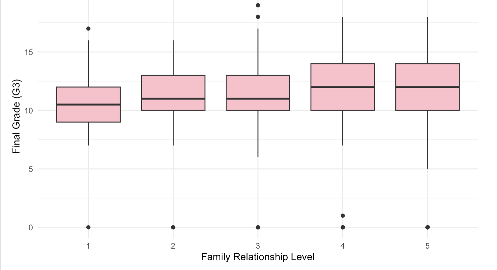

Introduction to the Data
The dataset used in this project comes from the UCI Machine Learning Repository and is titled Student Performance (Cortez, 2008). It contains academic and demographic information for secondary school students from two Portuguese schools: Gabriel Pereira and Mousinho da Silveira.
Source: Cortez, P. (2008). Student Performance Dataset.
What the Data Captures
Each observation in the dataset represents one student. The dataset includes academic performance measures such as first, second, and final period grades (G1, G2, G3), as well as behavioral and contextual variables including number of absences, study time, health status, family background, parental occupation, and extracurricular participation.
The final grade (G3), measured on a 0–20 scale, is the outcome variable of the analisis. Additional variables such as absences, study time, parental job, and health provide insight into factors that may influence academic performance.
Potential Biases and Limitations
- Limited geographic scope: The dataset includes only two schools in Portugal, which limits generalizability to other regions or education systems.
- Self-reported measures: Variables such as health and study time are based on student reporting and may contain inaccuracies.
- Cross-sectional data: The dataset captures a single academic year, making it difficult to infer long-term trends or causal relationships.
- Cultural context: Educational norms and family structures in Portugal may differ from those in other countries.
Summary Statistics
This analysis focuses on two quantitative variables (Absences and Final Grade (G3)), two ordinal variables (Study Time and Family Relationship), and two nominal variables (Reason and School).
Frequency/Distribution Visualizations
Distribution of Absences
The distribution of absences is strongly right-skewed. Most students have relatively few absences, with the highest frequency near zero to five absences. However, a small number of students exhibit very high absence counts, extending beyond 20 and even 30 absences. This skewness suggests that extreme absenteeism may play a significant role in academic outcomes.
Distribution of Final Grades
Final grades appear approximately bell-shaped, centered around 11–13 on a 0–20 scale. While most students cluster around the middle of the grading range, there are relatively few extremely low or extremely high scores. This moderate spread suggests variability in performance but no extreme polarization.
Distribution of Study Time
Most students fall into the lower study time categories (levels 1 and 2), representing fewer than five hours of weekly study time. Far fewer students report studying more than 10 hours per week (level 4). This imbalance suggests that high study effort is less common, which may influence grade variation.
Distribution of Family Relationship
Family relationship quality is concentrated in the higher categories (levels 4 and 5). Very few students report poor family relationships (levels 1 or 2). This indicates that most students perceive strong family support, though the smaller lower-quality groups may still show differences in academic outcomes.
Distribution of Reason for Attendance
The most common reason for attending school is categorized as "Other," followed by course preference and school reputation. Fewer students selected proximity to home. These differences may reflect varying levels of academic motivation or institutional preference.
Distribution of School
The dataset contains more students from Gabriel Pereira (GP) than Mousinho da Silveira (MS). While this imbalance does not affect descriptive analysis, it is important to consider when comparing academic performance across institutions.
Visualizations
Absences vs Final Grade
The scatterplot shows a slight negative trend between absences and final grade (G3). As absences increase, final grades tend to decrease. The regression line slopes downward, suggesting a negative association between attendance and performance. While the relationship is not extremely strong, students with very high absence counts appear more likely to receive lower grades. This pattern suggests attendance may influence academic outcomes.
G3 by Study Time
The boxplot comparing final grades across study time levels shows an upward shift in median grades as study time increases. Students in higher study time categories generally have higher median G3 scores.
G3 by Family Relationship
The boxplot of final grade by family relationship quality shows a modest increase in median grades as reported family relationship quality improves. Students reporting higher levels (4 and 5) tend to have slightly higher median G3 scores. Therefore, the more familial support a student has the likelier they will perform better academically
Hypotheses
Hypothesis 1
Students with higher numbers of absences will have significantly lower final grades (G3) than students with fewer absences.
Hypothesis 2
Students who report higher weekly study time will have higher average final grades (G3) than students with lower study time levels.
Hypothesis 3
Students reporting higher family relationship quality will have higher average final grades (G3) compared to students reporting lower relationship quality.